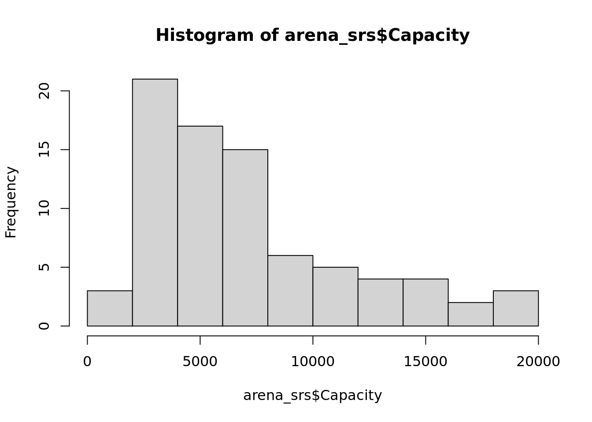

[1] "Calculated n: 79.296066252588"1.
a.
For our margin of error, we are given the formula,
\[ MOE \approx 2 \sqrt{\frac{(1 - \frac{n}{N})S^2}{n}} . \]
Then, we are told to estimate \(S\) with \(S_{guess} = 5000\) and we want \(n\) to produce a MOE around 1000, i.e. find an \(n\) such that
\[ 1000 = 2 \sqrt{\frac{(1 - \frac{n}{N})5000^2}{n}} \]
\[ 500 = \sqrt{\frac{(1 - \frac{n}{N})5000^2}{n}} \\ \]
\[ 250,000 = \frac{(1 - \frac{n}{N})5000^2}{n} \\ \]
\[ 250,000 \times n = 5000^2 - 5000^2n \frac{1}{N} \\ \]
\[ n(250,000+\frac{5000^2}{N}) = 5000^2 \\ \]
\[ n = \frac{5000^2}{250,000+\frac{5000^2}{N}}, \quad \text{given} ~~ N=383 \]
\[ n = 79.296... \approx 80 \]
Check:
n = 80
N = 383
moe_n80 = 2 * sqrt((1 - n / N) * 5000^2 / n)[1] "The MOE we get from sample size of 80 is 994.4, roughly rounding to 1000"b.
set.seed(0)
sampled_rows = sample(1:nrow(arenas), 80)
arena_srs = arenas[sampled_rows, ]c.
n=80
N=383
arena_srs$wt = n/N #equal weight for each observation in SRS
arena_srs$fpc = 383
srs_des = svydesign(~1, weights=~wt, fpc=~fpc, data=arena_srs)
svymean(~Capacity, srs_des, na.rm=TRUE) mean SE
Capacity 7182.1 453.35confint(svymean(~Capacity, srs_des, na.rm = TRUE), level=.95) 2.5 % 97.5 %
Capacity 6293.557 8070.643We have a decently large sample size of 80, so central limit theory should be applicable. As a safety measure, we can check to see if Capacity behaves weirdly i.e. would need a larger sample size for the sample mean distribution to resemble a bell curve.

While there is some skew, it is not extreme. Therefore, we can use our confidence interval to say that:
“With a point estimate of 7182.1 as our average capacity, we are 95% sure that \[\bar{Y} \in (6193.06, 8006.51)\]”
d.
arena_srs$Less = as.numeric(arena_srs$Capacity < 9314)
srs_des = svydesign(~1, weights=~wt, fpc=~fpc, data=arena_srs)
arena_less = svymean(~Less,
design = srs_des,
na.rm = TRUE)The estimated percentage of arenas with capacity below 9314 is obtained by taking the proportion of arenas in the sample that meet that condition. We did this by making the indicator variable Less, which is 1 for a capacity below 9314 and 0 otherwise. Then, by taking the SRS mean, we effectively get a sample proportion, our estimator.
Central limit theorem is applicable here, but we may need a larger sample size if we have a heavy skew in the sample proportion distribution. This would mean that if \(p\) is close to either 0 or 1, it might be risky to use a confidence interval using SE and critical value. But note that this likely isn’t the case, as our sample proportion is around 0.76.
So, we can declare 95% confidence interval:
arena_less mean SE
Less 0.75 0.0433confint(arena_less, level = 0.95) 2.5 % 97.5 %
Less 0.6650708 0.8349292(0.67, 0.84) with 0.75 as our estimate.
2.
a.
arenas = arenas |>
mutate(
strat = case_when(
Opened < 1960 ~ "Classics",
Opened < 1980 ~ "Older",
Opened < 2000 ~ "Middle",
TRUE ~ "New"
),
strat = factor(strat, levels = c("Classics", "Older", "Middle", "New"))
)
table(arenas$strat)
Classics Older Middle New
47 125 114 97 With allocation, the stratum sample size is \(n_h = n \times W_h\), where \(W_h = N_h / N\). These are not integers, so we round such that n_h is rounded down, except for the strata with the largest remainder. That strata gets the “leftover” in a sense. This ensures that \(\sum_h n_h = 80\) while staying as close to the proportions as possible.
#we need a function to deal with an uneven split of sample, function logic came from Claude
largest_remainder = function(exact, total) {
fl = floor(exact)
remain = total - sum(fl)
if (remain > 0) {
ord = order(exact - fl, decreasing = TRUE)
fl[ord[seq_len(remain)]] = fl[ord[seq_len(remain)]] + 1
}
fl
}
Nh = table(arenas$strat)
Wh = Nh/N
exact_nh = n * Wh
nh = largest_remainder(as.numeric(exact_nh), n)
names(nh) = names(Nh)
allocation_table = tibble(
stratum = names(Nh),
Nh = as.numeric(Nh),
Wh = round(as.numeric(Wh), 4),
exact_nh = round(as.numeric(exact_nh), 2),
nh = nh
)
allocation_table# A tibble: 4 × 5
stratum Nh Wh exact_nh nh
<chr> <dbl> <dbl> <dbl> <dbl>
1 Classics 47 0.123 9.82 10
2 Older 125 0.326 26.1 26
3 Middle 114 0.298 23.8 24
4 New 97 0.253 20.3 20sum(nh) #must be 80[1] 80Now, we can draw a SRS stratified sample. slice_sample() samples without replacement by default, and grouping by strat first means the draws happen independently within each stratum.
set.seed(322)
arena_str = arenas |>
group_by(strat) |>
group_modify(~ slice_sample(.x, n = nh[[as.character(.y$strat)]])) |>
ungroup()
count(arena_str, strat)# A tibble: 4 × 2
strat n
<fct> <int>
1 Classics 10
2 Older 26
3 Middle 24
4 New 20b.
Each arena in stratum \(h\) is selected with equal proability \(n_h / N_h\), so each arena has a sampling weight of \(N_h / n_h\).
arena_str = arena_str |>
mutate(
strwt = as.numeric(Nh[as.character(strat)]) / nh[as.character(strat)],
strfpc = as.numeric(Nh[as.character(strat)])
)
str_des = svydesign(~1, strata = ~strat, weights = ~strwt, fpc = ~strfpc, data = arena_str)
str_mean = svymean(~Capacity, str_des, na.rm = TRUE)
str_mean mean SE
Capacity 7917.9 472.33confint(str_mean, level = 0.95) 2.5 % 97.5 %
Capacity 6992.135 8843.64With a total sample size of \(n = 80\) and no extreme skew in capacity, the central limit theorem is reasonable here, so the interval (6992.1, 8843.6) works as a 95% confidence interval for \(\bar{Y}\).
c.
arena_str = arena_str |>
mutate(Less = as.numeric(Capacity < 9314))
str_des = svydesign(
~1,
strata = ~strat,
weights = ~strwt,
fpc = ~strfpc,
data = arena_str
)
str_prop = svymean(~Less, str_des, na.rm = TRUE)
str_prop mean SE
Less 0.68785 0.0471confint(str_prop, level = 0.95) 2.5 % 97.5 %
Less 0.5955306 0.7801673The estimated proportion is not close to either 0 or 1, so the central limit theorem is suitable. Therefore, we can use 95% confidence interval (0.59, 0.78)
3.
Optimal allocation follows the formula:
\[ n_h = n \cdot \frac{N_h S_h}{\sum_{k=1}^{H} N_k S_k}, \]
such that strata that are both large and varying get more of the sample. We substitute the sample within strata with standard deviations \(s_h\) from problem 2 for the unknown \(S_h\).
sh_tab = arena_str |>
group_by(strat) |>
summarise(
nh_2 = n(),
sh = sd(Capacity),
) |>
ungroup() |>
mutate(Nh = as.numeric(Nh[as.character(strat)]),
Nh_sh = Nh*sh)
exact_opt = n*sh_tab$Nh_sh/sum(sh_tab$Nh_sh)
nh_opt = largest_remainder(exact_opt, n) #reuse rounding system from earlier
optimal_table = tibble(
stratum = as.character(sh_tab$strat),
Nh = sh_tab$Nh,
s_h = round(sh_tab$sh, 1),
Nh_sh = round(sh_tab$Nh_sh, 1),
exact_nh = round(exact_opt, 2),
nh_optimal = nh_opt
)
optimal_table# A tibble: 4 × 6
stratum Nh s_h Nh_sh exact_nh nh_optimal
<chr> <dbl> <dbl> <dbl> <dbl> <dbl>
1 Classics 47 3724. 175032. 7.77 8
2 Older 125 4122. 515228. 22.9 23
3 Middle 114 5525. 629863. 28.0 28
4 New 97 4957. 480859. 21.4 21sum(nh_opt) # again, has to be 80[1] 80The same largest-remainder rounding guarantees the integer sizes add to 80, which checks out!
4.
Budget $100000 with fixed costs $10,000 leaves $90000 of variable budget. The population variances are assumed to be similar, so they’ll cancel out of the allocation formula.
a.
Every interview costs the same \(\$75\), so no preference between groups. With \(S_1 = S_2\), optimal allocation reduces to proportional allocation.
Total sample size:
\[ n = \frac{90000}{75} = 1200. \]
Splitting proportionally:
\[ n_1 = 0.95 \times 1200 = 1140, \qquad n_2 = 0.05 \times 1200 = 60. \]
So we conclude 1140 internet households and 60 non-internet households, using the full \(\$90000\).
b.
Now the costs differ: \(c_1 = \$15\) and \(c_2 = \$100\). Optimal allocation under unequal costs is
\[ n_h \propto \frac{W_h S_h}{\sqrt{c_h}}, \]
and with \(S_1 = S_2\) this becomes \(n_h ~\text{proportional to}~ W_h / \sqrt{c_h}\):
\[ \frac{n_1}{n_2} = \frac{0.95/\sqrt{15}}{0.05/\sqrt{100}} = \frac{0.24527}{0.005} = 49.05. \]
When we impose the budget constraint \(15 n_1 + 100 n_2 = 90000\) with \(n_1 = 49.05\,n_2\):
\[ n_2 \left( 49.05 \times 15 + 100 \right) = 90000 \] \[ n_2 \times 835.8 = 90000 \quad \Longrightarrow \quad n_2 = 107.7 \] \[ n_1 = 49.05 \times 107.7 = 5282.1 \]
ratio = (0.95 / sqrt(15)) / (0.05 / sqrt(100))
n2 = 90000 / (ratio * 15 + 100)
n1 = ratio * n2
c(n1 = n1, n2 = n2) n1 n2
5282.1823 107.6727 15 * 5282 + 100 * 107[1] 89930Rounding down, we get about 5282 internet households online and 107 non-internet households in person, costing \(\$89930\). Cheap online interviews buy a far larger total sample, which is why the mixed-mode design does a better job with precision.
5.
The file is a stratified sample of trucks. STRATUM identifies each record’s stratum and TABTRUCKS is the tabulation weight. Since the weight is already the inverse selection probability, it goes straight into weights=.
The population is roughly 85 million trucks against a sample of a few thousand, so every \(n_h/N_h\) is very close to zero, so it makes sense to treat our sampling as if with replacement.
library(tidyverse)
library(survey)
trucks = read.csv("~/sta322_methods3/data/trucks.csv")
trucks = trucks |>
mutate(
one = 1,
TruckType = factor(
TRUCKTYPE,
levels = 1:5,
labels = c(
"Pickups",
"Minivans, other light vans, and SUVs",
"Light single-unit trucks < 26,000 lbs",
"Heavy single-unit trucks >= 26,000 lbs",
"Truck-tractors"
)
)
)
truck_des = svydesign(
ids = ~1,
strata = ~STRATUM,
weights = ~TABTRUCKS,
data = trucks
)a.
N_hat <- svytotal(~one, truck_des)
N_hat total SE
one 85174776 0confint(N_hat, level = 0.95) 2.5 % 97.5 %
one 85174776 85174776This returns roughly \(8.52 \times 10^7\) trucks, matching the direct sum sum(trucks$TABTRUCKS).
The standard deviation is also roughly zero because, in a stratified design, the weight attached to an observation in \(h\)th stratum is \(w_{hi} = N_h / n_h\), so summing the weights over the whole sample gives
\[ \hat{N} = \sum_{h=1}^{255} \sum_{i \in \mathcal{S}_h} \frac{N_h}{n_h} = \sum_{h=1}^{255} n_h \cdot \frac{N_h}{n_h} = \sum_{h=1}^{255} N_h = N . \]
Therefore, every possible sample gets us the same \(N\) estimate. The stratum sample sizes are already set in the survey design, and the response variable is the constant 1, so there is no randomness from our responses in our sample. As a result, \(\hat{N}\) gets the actual population quantity i.e. \(s_h^2 = 0\), so every term of \(\sum_h N_h^2 (1 - n_h/N_h) s_h^2 / n_h\) is just 0.
b.
total_miles = svytotal(~MILES_ANNL, truck_des, na.rm = TRUE)
total_miles total SE
MILES_ANNL 1.1147e+12 6492344384confint(total_miles, level = 0.95) 2.5 % 97.5 %
MILES_ANNL 1.102003e+12 1.127453e+12The estimated total miles driven by all trucks in the population is about \(1.115 \times 10^{12}\), with a 95% confidence interval of roughly \(1.102 \times 10^{12}\) to \(1.127 \times 10^{12}\) miles.
The sample is large, so Central Limit Theorem / using the confidence interval is appropiate.
c.
svyby applies a survey estimator separately within each level of a grouping variable, carrying the design information into each subgroup. This is the right tool here — subsetting the data frame by hand and re-running svytotal would discard the stratum structure.
There is a convenient feature of this particular design: trucktype is one of the two stratification variables (the 255 strata are 51 states \(\times\) 5 truck classes). Each truck class is therefore an exact union of 51 whole strata, not a domain that cuts across them. The sample size within each class is fixed by the design rather than random, so these are ordinary stratified totals and no domain-estimation correction is needed.
miles_by_type = svyby(
~MILES_ANNL, by = ~TruckType, design = truck_des, FUN = svytotal, na.rm = TRUE)
miles_by_type TruckType
Pickups Pickups
Minivans, other light vans, and SUVs Minivans, other light vans, and SUVs
Light single-unit trucks < 26,000 lbs Light single-unit trucks < 26,000 lbs
Heavy single-unit trucks >= 26,000 lbs Heavy single-unit trucks >= 26,000 lbs
Truck-tractors Truck-tractors
MILES_ANNL se
Pickups 428294502082 4708839922
Minivans, other light vans, and SUVs 541099850893 4408042207
Light single-unit trucks < 26,000 lbs 41279084490 395841910
Heavy single-unit trucks >= 26,000 lbs 31752656137 348294378
Truck-tractors 72301789843 518195242confint(miles_by_type, level = 0.95) 2.5 % 97.5 %
Pickups 419065345426 437523658737
Minivans, other light vans, and SUVs 532460246925 549739454860
Light single-unit trucks < 26,000 lbs 40503248602 42054920378
Heavy single-unit trucks >= 26,000 lbs 31070011700 32435300573
Truck-tractors 71286145832 733174338536.
a.
The Horvitz–Thompson estimator of a population total weights each sampled unit by the inverse of its selection probability:
\[ \hat{t}_y = \sum_{h=1}^{5} \sum_{i \in \mathcal{S}_h} \frac{y_{hi}}{\pi_{hi}}, \qquad \pi_{hi} = \frac{n_h}{N_h}. \]
For \(h = 1, 2, 3\) we have \(N_h = 1\). A stratum of size 1 forces \(n_h = 1\): the single unit must be in the sample. So \(\pi_{hi} = 1/1 = 1\) and each of those units contributes its own value, \(y_h / 1 = y_h\).
For \(h = 4, 5\) the selection probability is \(n_h / N_h\), so the weight is \(N_h / n_h\) and the stratum contributes
\[ \sum_{i \in \mathcal{S}_h} \frac{N_h}{n_h} y_{hi} = \frac{N_h}{n_h} \sum_{i \in \mathcal{S}_h} y_{hi} = N_h \bar{y}_h . \]
Summing the five strata:
\[ \hat{t}_y = y_1 + y_2 + y_3 + N_4 \bar{y}_4 + N_5 \bar{y}_5 . \]
b.
The first friend is correct.
The reason being that strata are sampled independently, so the variance of \(\hat{t}_y\) is the sum of the five stratum-specific variances:
\[ \widehat{V}(\hat{t}_y) = \sum_{h=1}^{5} N_h^2 \left( 1 - \frac{n_h}{N_h} \right) \frac{s_h^2}{n_h}. \]
For \(h = 1, 2, 3\) the whole strata is sampled such that \(n_h = N_h = 1\), so the expression \(\left( 1 - \frac{n_h}{N_h} \right)\) is \(1 - 1/1 = 0\) and the whole term is evaluated as 0. In other words, there is no variability in \(y_1\), \(y_2\), \(y_3\).Dropping them is not throwing away information– the sample already matches that stratum within the population.
That leaves
\[ \widehat{V}(\hat{t}_y) = N_4^2 \left( 1 - \frac{n_4}{N_4} \right) \frac{s_4^2}{n_4} + N_5^2 \left( 1 - \frac{n_5}{N_5} \right) \frac{s_5^2}{n_5}, \]
which is the first friend’s formula.
Then, we know the second friend is wrong. This is because pooling all \(n\) observations into one sample computes \(s^2\) across the whole sample, meaning it doesn’t make sense to have differences in the \(y_{hi}\) for each stratum. Then, the formula \((1 - n/N) s^2 / n\) is the variance of an SRS mean, not for the estimator of the total \(\hat{t}_y\), which then applies the wrong weights to strata 1–3 by treating the sampling as a random process, when the sampling of the one individual in each of the strata is already for certain. So, the second student gets an overestimate of the variance.